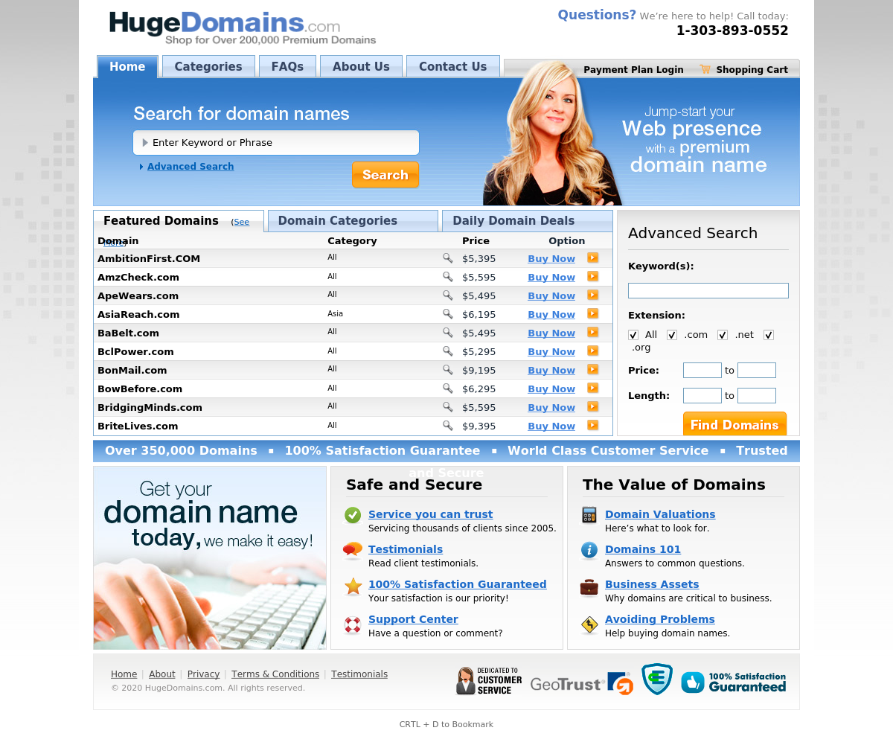

One day I decided to do some recon on a bug bounty program I liked. This program has an open scope that includes all subdomains: *.redacted.com
I ran their domain through my recon script, and took screenshots of all the found subdomains. Reviewing the screenshots, I discovered something that didn't look right.
A screenshot of app.redacted.redacted.com displayed this:
This immediately caught my attention for two reasons:
1. I had run recon on this program before, and had never seen a screenshot that looked like this
2. hugedomains.com sounds like a place you sell domains, so my brain jumped to subdomain takeover
At this point, I decided to use nslookup to learn more about this domain.
It turned out that app.redacted.redacted.com had a C-Name record pointing to a domain called redacted-arena.com, which was for sale on hugedomains.com
This explains why app.redacted.redacted.com was a hugedomains.com advertisment, it was serving content from the for sale domain! This means if we bought redacted-arena.com, we could serve whatever content we wanted on app.redacted.redacted.com!
I immediately checked the price of redacted-arena.com, 3295$! I cant afford that. '-.-
Despite not actually exploiting the dangling c-name, I reported the vulnerability through hackerone, and recieved a bounty. 😄